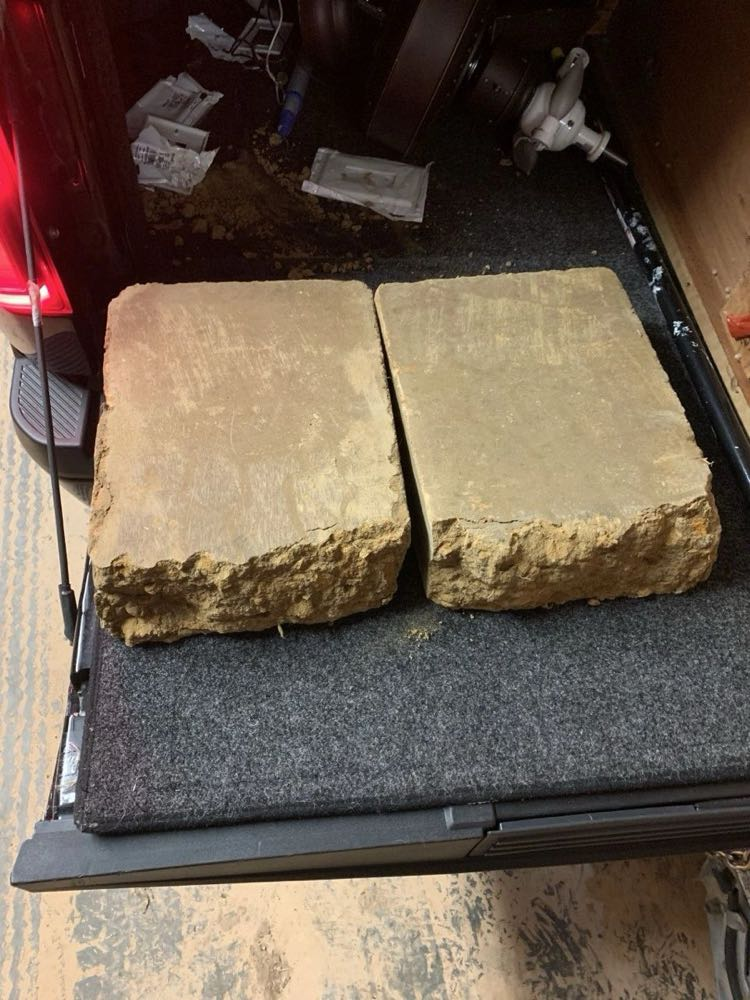
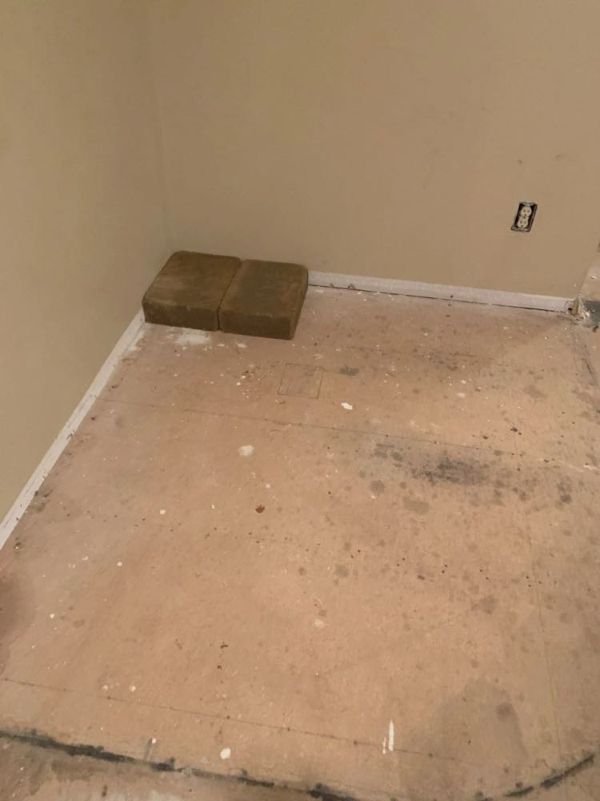
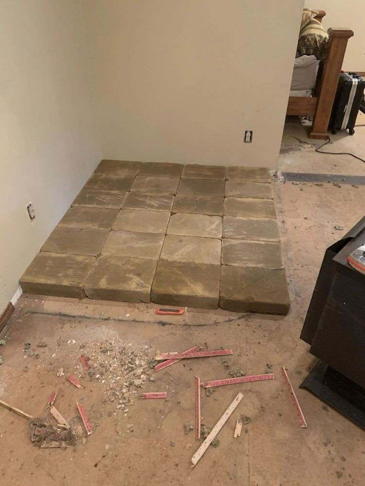
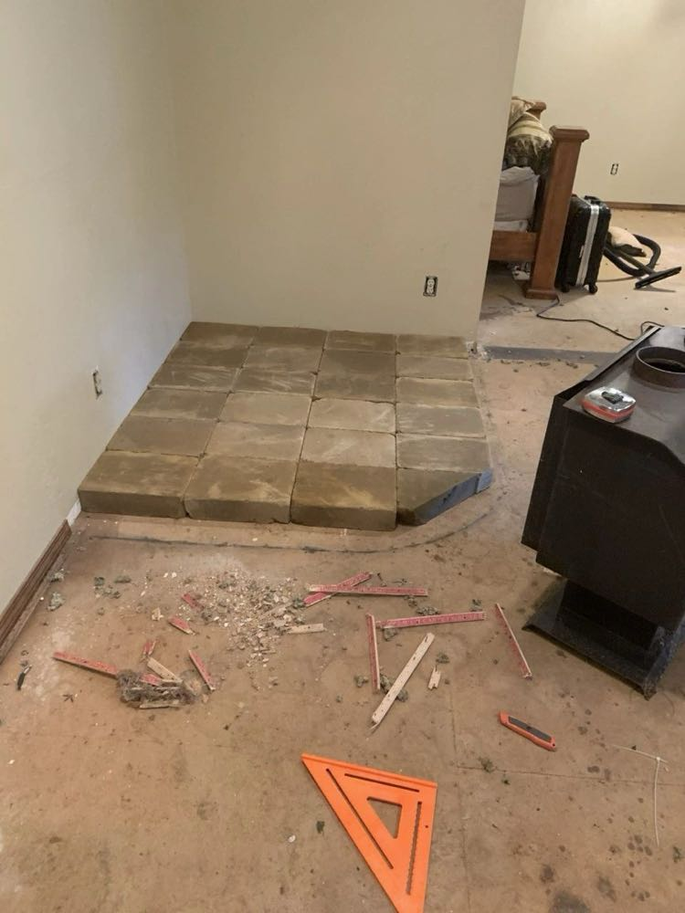
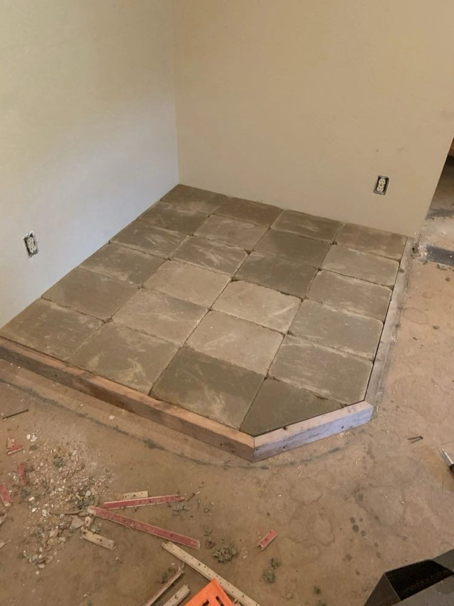
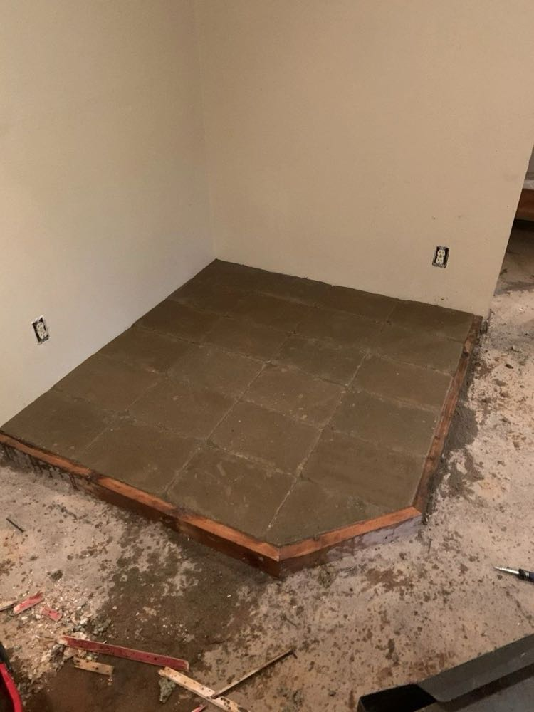

I am currently renovating my rental home in NW Arkansas and this week decided I would put a CEB hearth in the house for a wood-burning stove to sit on. Aside from being beautiful and eye-popping in any home, CEBs are also, of course, fireproof...so they make perfect sense for a hearth. Yesterday, I made a quick detour to our customer build site in SE Oklahoma to pick up 30 freshly pressed CEBs on the way up to Arkansas. The rental trailer and bed of my half-ton truck were chock full of furniture I was taking to the house, so the only place to put the blocks was in the cab. All I had to do now was drive the four hours to the house......not so fast.....40 miles from my destination, the trailer started fish-tailing uncontrollably on the highway! After several seconds of seeing my life flash before my eyes, I was somehow able to bring the truck to a stop on the shoulder. When I got out to inspect what had gone wrong, I discovered that the 6' x 12' trailer (that the rental place was responsible for securing, mind you) had popped off the ball hitch and would have fallen to the ground had it not been for the chains holding it up. In the meantime, the tongue of the trailer had wedged itself under the back of the truck with the brake handle pointed straight up, leaving me no way to pull forward without doing damage to the undercarriage of the truck and/or the trailer. In the midst of interstate traffic whizzing by at 80 miles an hour, a couple good Samaritans stopped to see what had gone wrong. After a quick analysis of my predicament, they concluded that the only way to get my truck up and over the trailer brake handle was if I had some blocks to drive up onto. That's when I remembered the 10" x 14" x 3.5" blocks sitting in the cab of the truck. With the roaring traffic flustering me, all I could think to say to these guys was "I have some blocks...but they're just made out of dirt".....cue the blank stares...."I have some compressed earth blocks that we could use" I tried to further explain. I could tell the only way to make them understand was to just grab a couple of the CEBs out of the truck and show them. They still had puzzled looks on their faces, but with dangerous traffic just feet away from us, there was no time to waste. We put the two blocks in front of the back tires of the truck, and up 'n' over I went, clearing the brake handle by an inch. I think the good Samaritans were pretty impressed...but what was most impressive about the whole thing was that the blocks had only been made a few days earlier and still hadn't even dried out. While stabilized with about 7% cement, they typically need 28 days to cure and harden to full strength. The 5,500 lb. Ford F150 was carrying over 1,000 lbs. of CEBs and probably another 1,500 lbs. of cargo on top of that. By my estimation, there was about 2,000 lbs. of downward force on each tire...and thus each earth block. There was some abrasion wear on the fresh, still damp blocks, where the truck tires to grip and climb up the side of the 3.5" thick blocks, but no damage whatsoever from the tires driving across and down the other side of the blocks!

With the trailer hooked back up and a couple new CEB believers in the rear-view mirror, I carefully and slowly drove the last 40 miles to the earth blocks' final destination. The hardest part of this project was over. Next came the fun part...laying the blocks. The design was pretty simple. I would just butt the blocks up next to the walls and to each other, leaving virtually no gap. I didn't even adhere the blocks to the floor, letting their own weight keep them place.




I could have filled the gaps with any number of materials...earthen slurry, mortar, grout...but just as an experiment, I decided to buy a bag of this polymeric paver sand from Lowe's. You can get it in various colors and all you have to do is sweep it into the cracks; it solidifies in between the blocks, helping to hold them in and giving it an attractive look. It's really more of an outdoor product but served our purpose on the CEB hearth. As of this morning, after sweeping in the polymeric sand and wetting it, the hearth looks like this:

No matter what you're doing with CEBs, the natural sturdy look of the blocks speaks for itself. I still have some finishing touches to do on this project. I'm going to paint the wood trim in front, put in some carpet, and finally put the wood-burning stove in place. Also, I liked the look of the earth blocks on the floor so much that I've now decided I want to put a few rows of CEBs up the wall to tie out the look. To do this I will have to go back to the source and get 30 more earth blocks....I'll just make sure the trailer hitch is on tight this time!